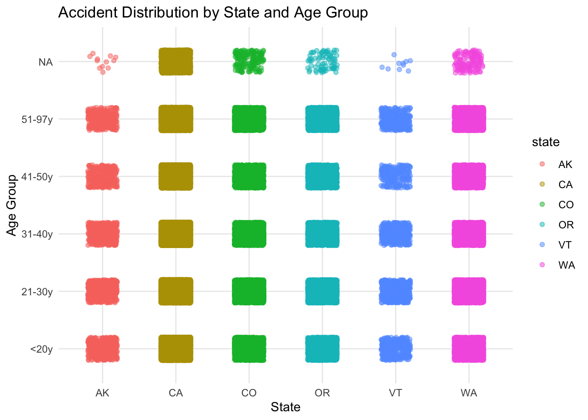

---- Compiling #TidyTuesday Information for 2025-04-22 ----
--- There are 2 files available ---
── Downloading files ───────────────────────────────────────────────────────────
1 of 2: "daily_accidents.csv"
2 of 2: "daily_accidents_420.csv"
# Draft cleaning script provided by @Rmadillo at# https://github.com/Rmadillo/Harper_and_Palayew/blob/1aaf1333e8fb6a8f3aa7f169a12943c17b3487da/Load_Data_and_Clean.R# Script cleaned and modernized by @jonthegeek (the script was submitted as a# TidyTuesday issue in 2019!).#### Load packages -------------------------------------------------------------library(haven)library(tidyverse)
── Attaching core tidyverse packages ──────────────────────── tidyverse 2.0.0 ──
✔ dplyr 1.1.4 ✔ readr 2.1.5
✔ forcats 1.0.0 ✔ stringr 1.5.1
✔ ggplot2 3.5.1 ✔ tibble 3.2.1
✔ lubridate 1.9.4 ✔ tidyr 1.3.1
✔ purrr 1.0.2
── Conflicts ────────────────────────────────────────── tidyverse_conflicts() ──
✖ dplyr::filter() masks stats::filter()
✖ dplyr::lag() masks stats::lag()
ℹ Use the conflicted package (<http://conflicted.r-lib.org/>) to force all conflicts to become errors
Rows: 3235 Columns: 5
── Column specification ────────────────────────────────────────────────────────
Delimiter: ","
chr (5): state_name, state_code, county_code, county_name, FIPS_class_code
ℹ Use `spec()` to retrieve the full column specification for this data.
ℹ Specify the column types or set `show_col_types = FALSE` to quiet this message.
#### Data wrangling ------------------------------------------------------------# Used https://osf.io/drbge/ Stata code as a guide for cleaning# All data# This might take a while... go get a coffeeall_accidents <- fars |># What are state and county codes/look ups? dplyr::select("id", "state", "county", "month", "day", "hour", "minute", "st_case", "per_no", "veh_no", "per_typ", "age", "sex", "death_da", "death_mo", "death_yr", "death_hr", "death_mn", "death_tm","inj_sev", "mod_year", "lag_hrs", "lag_mins" ) |> dplyr::mutate( dplyr::across(c("month", "day", "hour", "minute"),~na_if(.x, 99) ),year = readr::parse_number(id) ) |> dplyr::filter( .data$per_typ ==1,!is.na(.data$year),!is.na(.data$month),!is.na(.data$day) ) |> dplyr::mutate(crashtime = .data$hour *100+ .data$minute,date =as.Date(paste(.data$year, .data$month, .data$day, sep ="-")),time =paste(.data$hour, .data$minute, sep =":"),timestamp =as.POSIXct(paste(.data$date, .data$time),format ="%Y-%m-%d %H:%M" ),e420 = .data$month ==4& .data$day ==20& .data$crashtime >=1620& .data$crashtime <=2359,e420_control = .data$month ==4& (.data$day ==20| .data$day ==27) & .data$crashtime >=1620& .data$crashtime <2359,d420 = .data$crashtime >=1620& .data$crashtime <=2359,sex =factor( dplyr::case_when( .data$sex ==2~"F", .data$sex ==1~"M",.default =NA_character_ ) ),period =factor( dplyr::case_when( .data$year <2004~"Remote (1992-2003)", .data$year >=2004~"Recent (2004-2016)",.default =NA_character_ ) ),age_group =factor( dplyr::case_when( .data$age <=20~"<20y", .data$age <=30~"21-30y", .data$age <=40~"31-40y", .data$age <=50~"41-50y", .data$age <=97~"51-97y",.default =NA_character_ ) ) )# Daily final working data# Only use data starting in 1992daily_accidents <- all_accidents |> dplyr::filter(.data$year >1991) |>summarize(fatalities_count = dplyr::n(), .by ="date")# Daily+Time Group final working datadaily_accidents_420 <- all_accidents |> dplyr::filter(.data$year >1991) |> dplyr::summarize(fatalities_count = dplyr::n(), .by =c("date", "d420"))
Warning: There was 1 warning in `mutate()`.
ℹ In argument: `state = recode(...)`.
Caused by warning:
! Unreplaced values treated as NA as `.x` is not compatible.
Please specify replacements exhaustively or supply `.default`.
ggplot(subset_accidents, aes(x = age_group, fill = state)) +geom_bar(position ="dodge") +scale_fill_brewer(palette ="Set1") +labs(title ="Accidents on 4/20 by Age Group and State",x ="Age Group",y ="Number of Accidents",fill ="State" ) +theme_minimal()
ggplot(subset_accidents, aes(x = state, y = age_group, color = state)) +geom_jitter(alpha =0.5, width =0.2, height =0.2) +labs(title ="Accident Distribution by State and Age Group",x ="State",y ="Age Group" ) +theme_minimal()

ggplot(subset_accidents, aes(x = state, y = county, fill = n)) +geom_tile() +scale_fill_viridis_c() +labs(title ="Accident Density by State and County",x ="State",y ="County",fill ="Accidents" ) +theme_minimal()